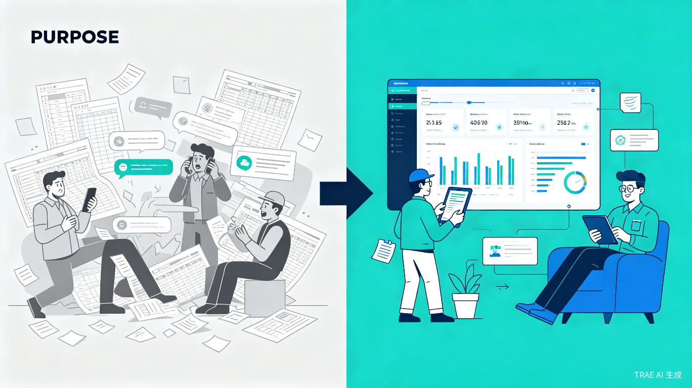
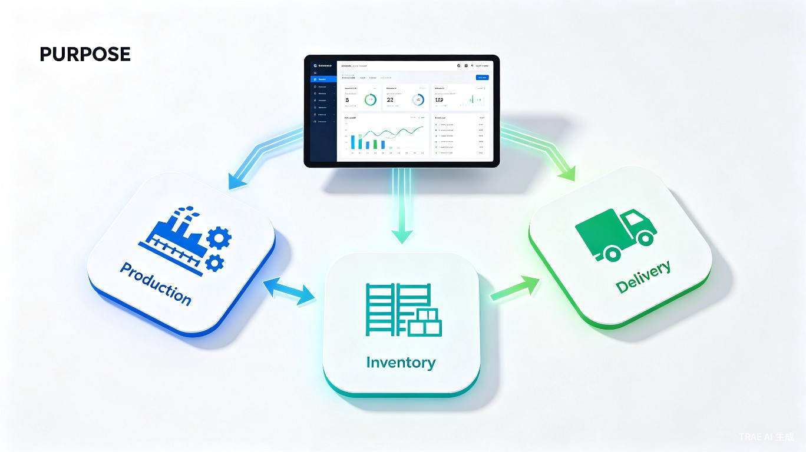
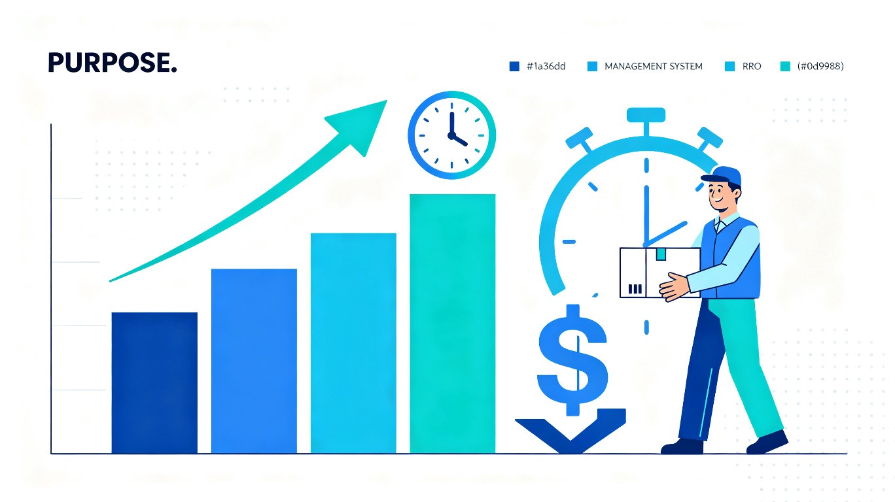

覆盖生产、库存、发货三大维度的工厂协同管理系统
打破信息孤岛，实现数据实时同步，让工厂运转更高效
"透明工厂"是一款专为中小型制造工厂设计的协同管理系统，旨在解决工厂内部信息数据不同步、生产物料不足、发货备货不足等核心痛点。
生产计划、库存数据、发货安排分散在不同人员手中，无法实时同步，各部门各自为政。
生产前才发现原材料不足，被迫停工待料，浪费大量工时和生产资源。
发货时才发现成品数量不够，客户订单无法按时交付，导致客户流失。
各部门反复电话、微信确认，信息传递有偏差，责任追溯困难。

面向中小型制造工厂的核心岗位人员，在关键业务节点提供精准的信息支持。
| 角色 | 核心职责 | 系统使用场景 |
|---|---|---|
| 生产主管 | 统筹生产计划与进度 | 排期时确认物料是否充足，跟踪生产进度 |
| 仓库管理员 | 管理物料出入库 | 出库时同步扣减库存，盘点调整 |
| 采购人员 | 物料采购与补货 | 接收物料短缺预警，及时补货 |
| 车间班组长 | 执行生产任务 | 查看生产任务，更新生产进度 |
创建生产计划时，系统自动校验物料库存，不足时立即预警，避免开工后才发现缺料。
物料出库自动扣减库存并通知生产端，库存变动实时同步，杜绝账实不符。
创建发货单时自动校验成品备货数量，不足时预警，确保按时交付。
生产进度、发货计划一目了然，减少反复确认，信息传递零偏差。
采用全栈JavaScript技术方案，前后端统一语言，部署简单，维护成本低。
| 层级 | 技术 | 选型理由 |
|---|---|---|
| 前端框架 | React 18 |
生态成熟，响应式适配好，组件复用性强 |
| UI组件库 | Ant Design 5 |
B端首选，组件丰富，内置移动端适配 |
| 状态管理 | Zustand |
轻量简洁，学习成本低，适合中小型项目 |
| 后端框架 | Express.js |
轻量稳定，Node.js生态统一，开发效率高 |
| 数据库 | SQLite + better-sqlite3 |
单文件、零配置、备份简单（复制文件即可） |
| 认证 | JWT + bcrypt |
无状态认证，易于扩展，安全性高 |
| 部署 | Docker / 直接运行 |
灵活，适配不同工厂环境 |
三大核心模块深度联动，数据实时同步，自动预警机制贯穿始终。

| 功能 | 说明 | 优先级 |
|---|---|---|
| 生产计划创建 | 创建生产单，指定产品、数量、交期 | P0 |
| BOM物料配置 | 为产品配置所需物料及数量 | P0 |
| 物料自动校验 | 创建时自动比对库存，不足标红预警 | P0 |
| 生产进度跟踪 | 待生产/生产中/已完成状态流转 | P0 |
| 生产看板 | 实时显示各订单进度和瓶颈 | P1 |
| 生产报表 | 产量统计、效率分析 | P2 |
| 功能 | 说明 | 优先级 |
|---|---|---|
| 物料入库 | 采购入库、退料入库、其他入库 | P0 |
| 物料出库 | 生产领料、其他出库 | P0 |
| 库存实时查询 | 显示各物料当前库存数量 | P0 |
| 安全库存预警 | 低于预设阈值时标红/通知 | P0 |
| 库存调整 | 盘点盈亏调整 | P1 |
| 库存流水 | 记录所有出入库操作 | P1 |
| 功能 | 说明 | 优先级 |
|---|---|---|
| 发货单创建 | 关联客户，指定产品、数量、发货日期 | P0 |
| 备货自动校验 | 创建时自动校验成品库存是否满足 | P0 |
| 发货状态跟踪 | 待备货/已备货/已发货状态流转 | P0 |
| 发货通知 | 发货后自动通知相关方 | P1 |
| 发货报表 | 发货统计、客户交付分析 | P2 |
| 预警类型 | 触发条件 | 通知对象 | 优先级 |
|---|---|---|---|
| ⚠ 物料短缺预警 | 生产单创建时，物料库存 < 需求数量 | 采购员、生产主管 | P0 |
| ⚠ 安全库存预警 | 物料库存 ≤ 预设安全库存值 | 采购员、仓库管理员 | P0 |
| ⚠ 备货不足预警 | 发货单创建时，成品库存 < 发货数量 | 仓库管理员、生产主管 | P0 |
| ⏰ 交期预警 | 生产单/发货单临近截止日期（提前1天） | 相关责任人 | P1 |
管理员可自由配置角色和权限，权限粒度覆盖模块访问 + 操作权限（查看/新增/编辑/删除）。
| 预设角色 | 核心权限 | 适用人员 |
|---|---|---|
| 超级管理员 | 全部权限，可配置其他角色 | 系统管理员 |
| 生产主管 | 生产模块全权限、查看库存、查看发货 | 生产主管 |
| 仓库管理员 | 库存模块全权限、查看生产、查看发货 | 仓库管理员 |
| 采购员 | 查看库存、查看物料预警、创建入库单 | 采购人员 |
| 班组长 | 查看生产单、更新生产进度 | 车间班组长 |
采用SQLite单文件数据库，表结构简洁清晰，支持核心业务数据的高效存取。
| 表名 | 核心字段 | 用途 |
|---|---|---|
users | id, username, password_hash, role_id, is_active | 用户与权限 |
roles | id, name, permissions(JSON) | 角色配置 |
materials | id, code, name, spec, unit, safety_stock | 物料基础信息 |
inventory | id, material_id, quantity, location | 实时库存 |
inventory_logs | id, material_id, type, quantity, operator_id | 库存流水 |
production_orders | id, order_no, product_name, qty, status, material_status | 生产单 |
production_materials | id, order_id, material_id, need_qty, status | 生产物料需求 |
delivery_orders | id, order_no, customer_name, qty, status, stock_status | 发货单 |
alerts | id, type, title, content, user_id, is_read | 预警记录 |
透明工厂不仅是一套管理工具，更是中小型工厂数字化转型的第一步。

提前预警物料短缺，避免因缺料导致的生产线停工，减少工时浪费。
发货前自动校验备货，确保按时交付，维护客户信任。
信息实时同步，减少电话、微信反复确认，让沟通聚焦在解决问题上。
系统沉淀生产、库存、发货数据，为管理决策提供量化依据。
对于中小型工厂而言，透明工厂是一套低成本、高回报的数字化管理工具：
分阶段迭代开发，快速验证核心价值，持续优化用户体验。
项目搭建与数据库初始化、用户认证与权限管理、物料基础数据管理、库存管理（入库/出库/查询）、生产管理（创建/校验/跟踪）、发货管理（创建/校验/跟踪）、预警系统、响应式UI适配。
仪表盘数据可视化、生产看板、数据导出Excel、操作日志、系统设置。
客户管理、供应商管理、采购订单、报表统计、邮件通知、多工厂支持。
| 方式 | 步骤 | 适用场景 |
|---|---|---|
| 直接运行（推荐） | npm install → npm run db:init → npm start | 快速启动，无Docker环境 |
| Docker部署 | docker build → docker run（挂载备份目录） | 标准化部署，便于迁移 |
| 备份类型 | 频率 | 保留份数 | 存储位置 |
|---|---|---|---|
| 自动备份 | 每天凌晨2点 | 7天 | 本地backup目录 |
| 手动备份 | 随时 | 不限 | 用户指定位置 |
| 导出Excel | 随时 | 不限 | 用户下载 |
| 风险 | 影响 | 应对措施 |
|---|---|---|
| 工厂网络环境差 | 系统无法访问 | 支持本地部署，内网即可使用 |
| 员工抵触新系统 | 推广困难 | 界面简洁、操作类似Excel、提供培训 |
| 数据迁移困难 | 历史数据丢失 | 提供Excel批量导入功能 |
| 系统稳定性 | 数据丢失 | SQLite自动备份 + 手动备份双保险 |
| 权限配置复杂 | 误操作 | 预设常用角色，降低配置门槛 |